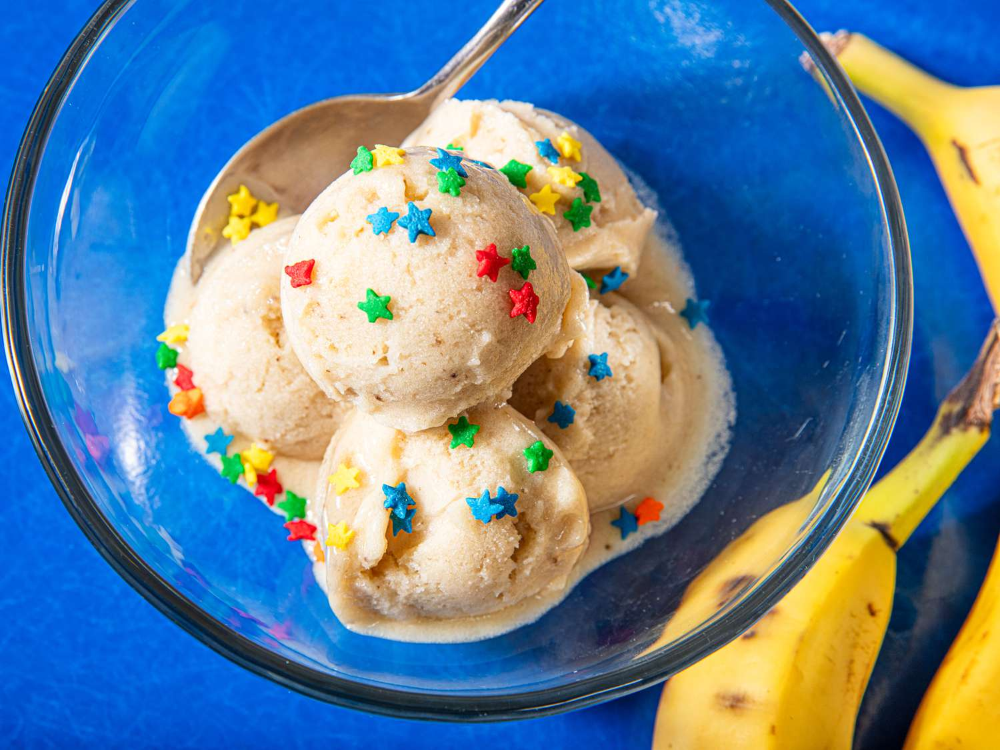
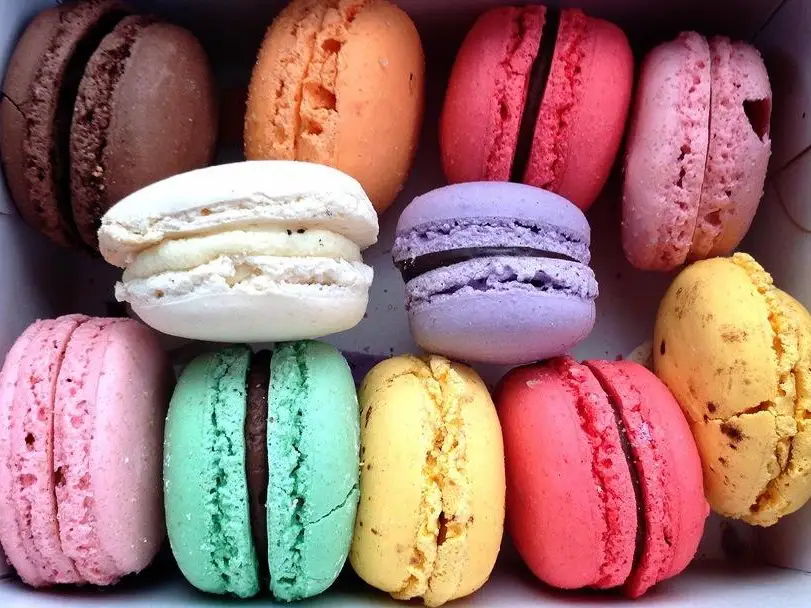
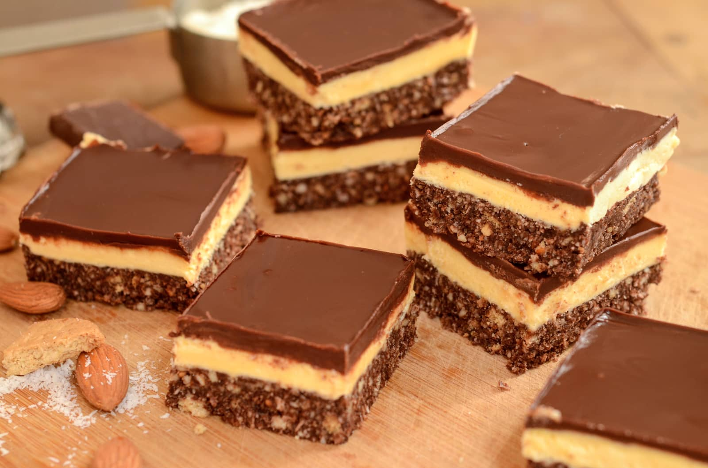
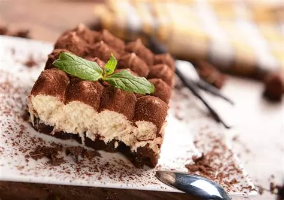

Le dessert peut aussi être un souffle de fraîcheur, une explosion de couleurs cueillies directement dans le verger. Imaginez le jus d'un fruit gorgé de soleil qui vient percuter la vivacité d'une herbe fraîche ou le peps d'un agrume. Dans ces recettes, la nature est la star. Pas de lourdeur, juste de la clarté : des textures légères comme des plumes, des saveurs nettes et une sensation de pureté qui laisse le palais propre et l'esprit léger.
Découvrez des désserts savoureux pour terminer votre repas en beauté.
Voir la recette


